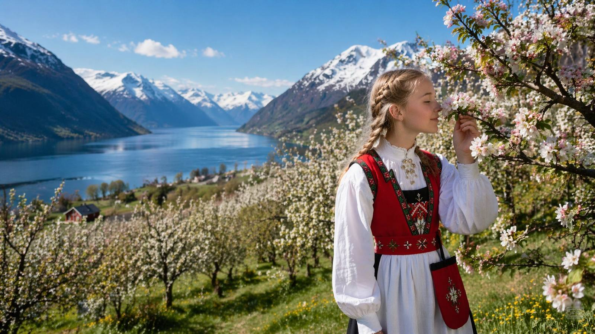
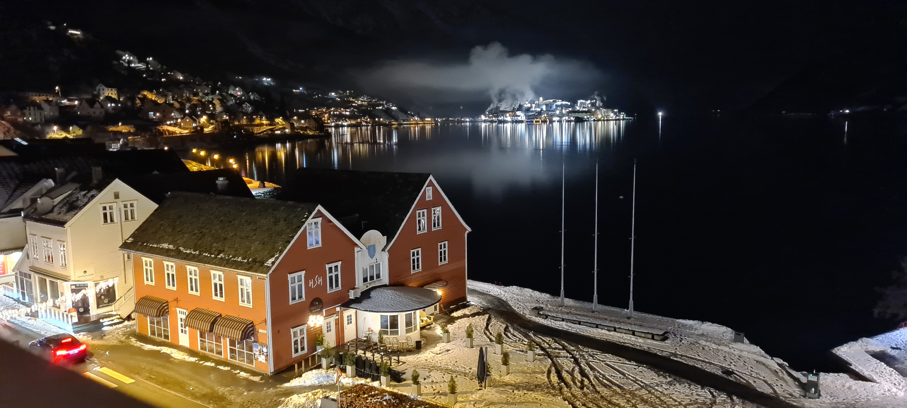
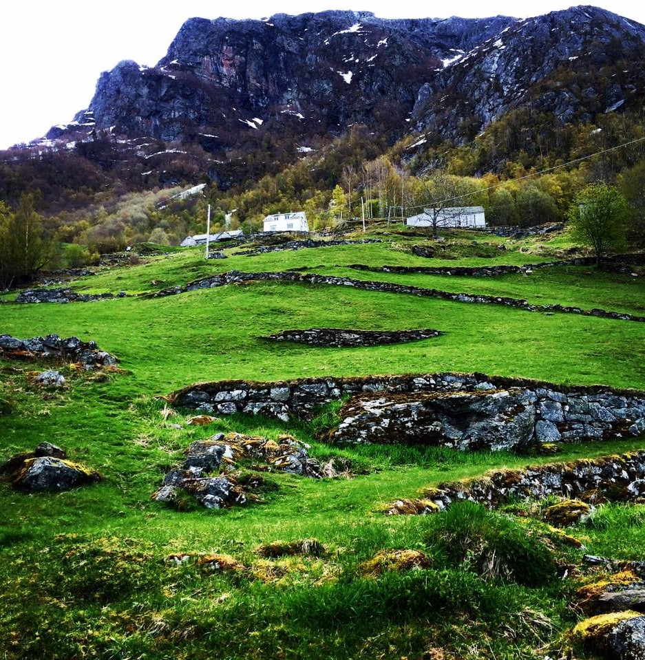
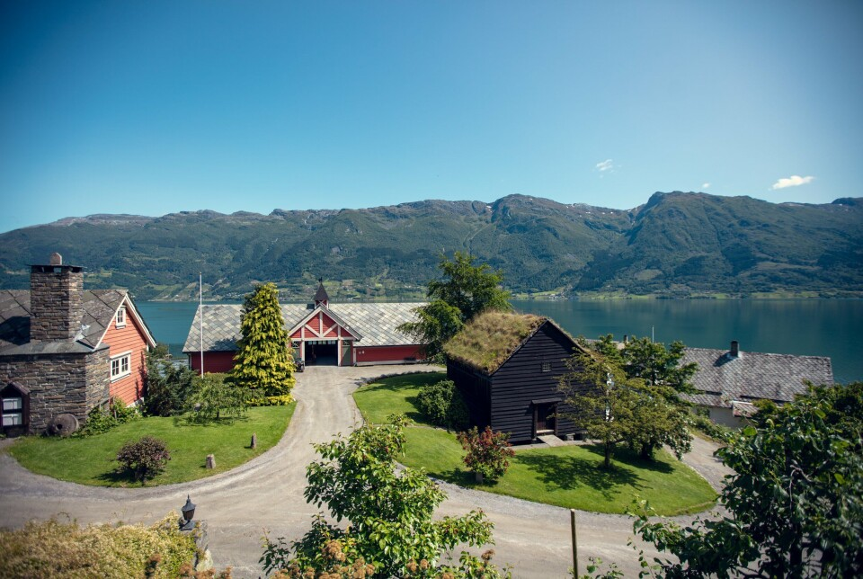
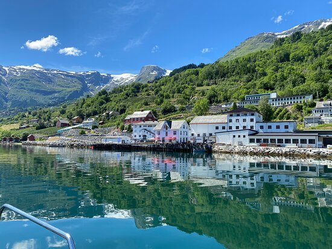
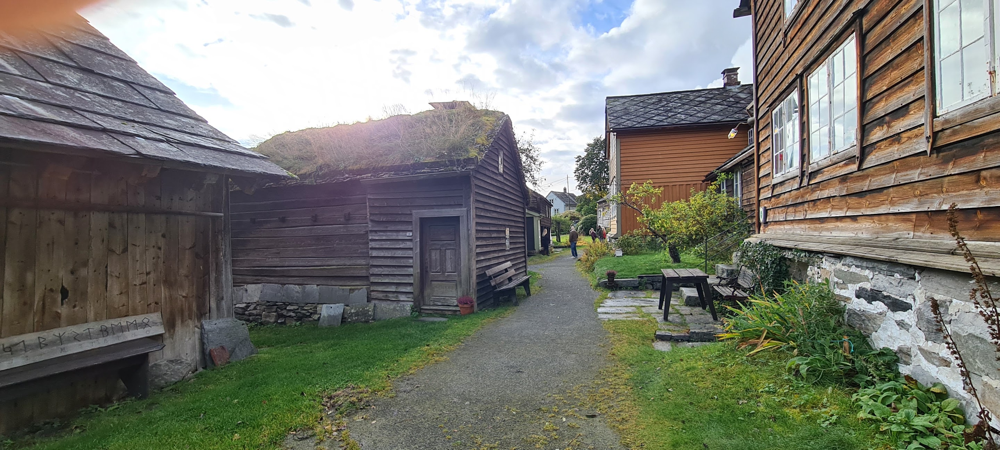
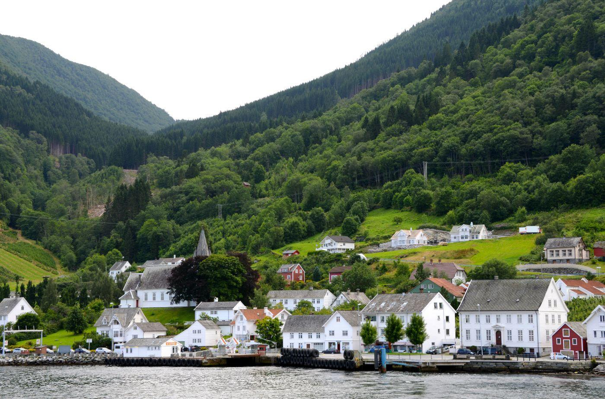
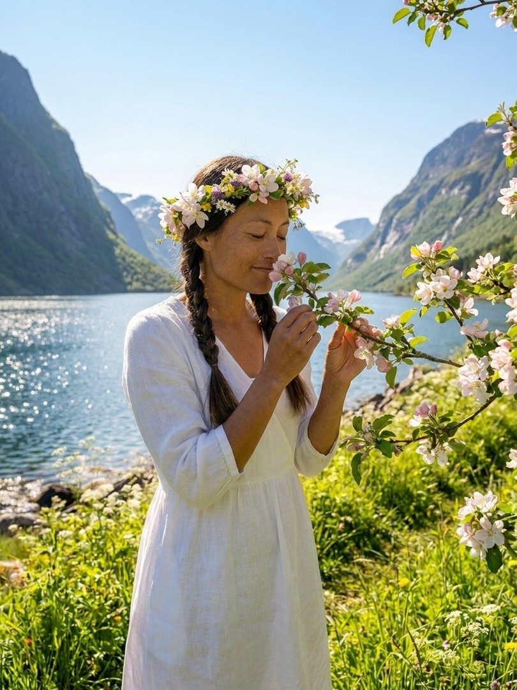

HARDANGER · VESTLAND
Sørfjorden
SØRFJORDEN · HISTORIE
—
NORGE · VESTLANDET
Sørfjorden
Klikk et punkt for å se hva det er — eller zoom selv med musehjul/fingre
SØRFJORDEN
Hilde
«Fra bøddelgård til blomstring»
FORESLÅTTE TEMAER
GUIDEHilde
💬 Klikk et tema for å utforske — eller spør Hilde direkte